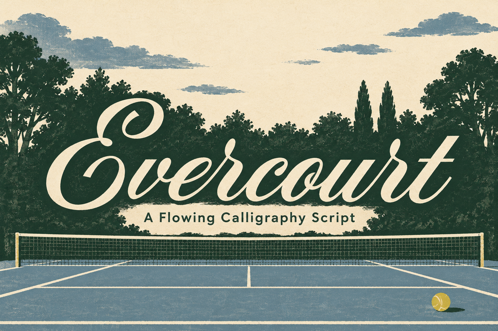
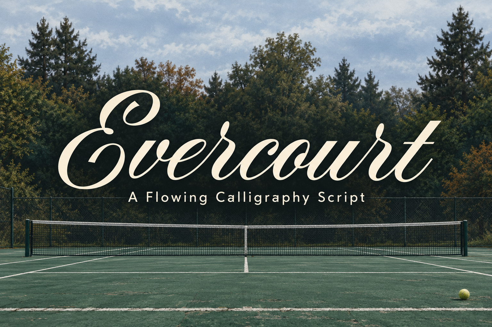
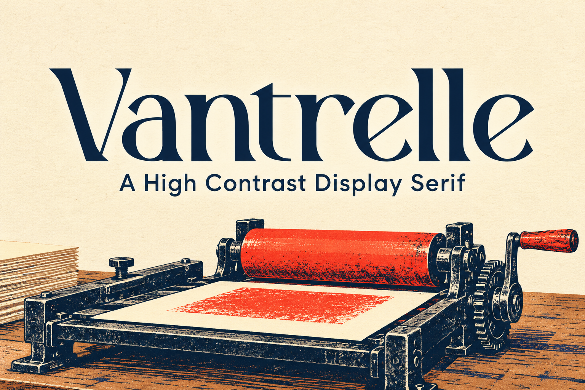

Evercourt
A Flowing Calligraphy Script
Hand-printed court scene, restrained paper texture, and a clear title over the tree line.
Three 3:2 thumbnail options using fresh title-case specimens from the actual font files: two distinct Evercourt directions and one Vantrelle direction. Each card links to its full-size render.

A Flowing Calligraphy Script
Hand-printed court scene, restrained paper texture, and a clear title over the tree line.

A Flowing Calligraphy Script
A quiet court photograph with the calligraphy as a crisp, high-contrast overlay.

A High Contrast Display Serif
A two-color printshop illustration supports the type; the title stays the first read.